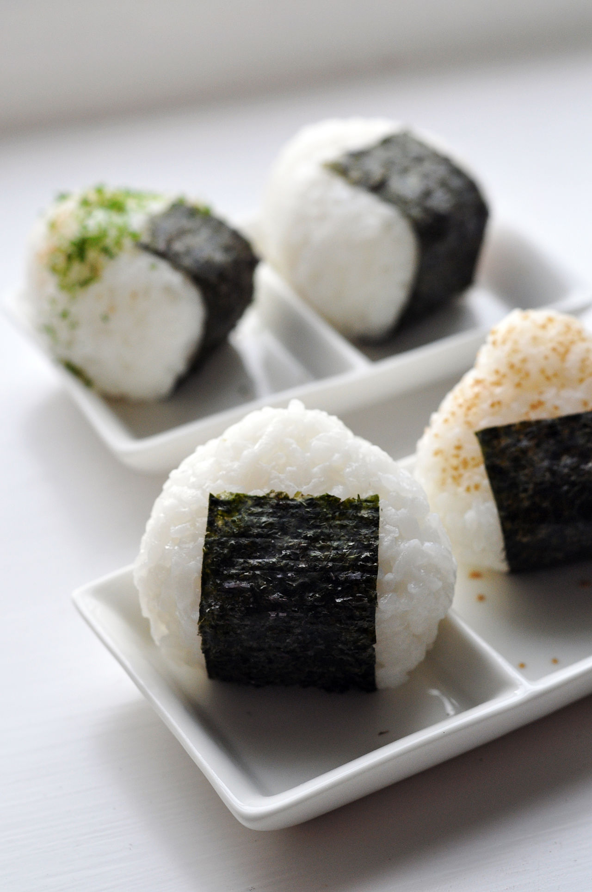

Onigiri

Description
Onigiri, AKA rice balls, is a Japanese dish commonly eaten for lunch.
In it simplest form it is just a salted ball of rice wrapped in nori seaweed sheet.
Many varieties will be stuffed with meats and/or vegetables, or have toppings
such as sesame seed or bonito fish flakes.
Deemed as the very first traveling food, onigiri were invented before
the existence of refrigeration as a means to preserve fresh rice longer so it can be
brought along to feed travelers, samurai, or soldiers on the road, or farmers in the farm fields.
The method was to fill the rice with a salty or sour ingredient as natural preservatives
and lightly compact them into portable food that can be carried along and eaten with hands.
To keep the rice safe, salt was first used in making the onigiri.
Ingredients
- Japanese Short-Grain Rice
- Nori Seaweed
- Optional Filliings
- shake> salted salmon
- umeboshiPickled plum
- tuna mayo
- tarakosalted cod roe
- chicken teriyaki
- shrimp tempura
- dinner leftovers
Steps
- Gather all ingredients
- Put the rice in a large bowl and gently wash the rice and discard the water. Repeat this process about several times.
- Let the rice soak in water for 30 minutes. Transfer the rice to a sieve and drain it completely for at least 15 minutes.
- Combine the rice and water in a pot. Cover the pot with the lid and bring it to a boil over medium heat.
- Once the water is boiling, change heat setting to lowest and continue to cook covered for 15 minutes, or until the water is completely absorbed.
- Remove the pot from the heat, let it steam for 10 minutes. Then, remove the lid and transfer the rice to a large plate. Let the hot rice cool until you can hold the rice without burning your hands.
- Prepare the fillings
- Cut the nori sheets into thirds.
- First, wet both of your hands with water to prevent the rice from sticking to your hands.
- Then put some salt in your hand and rub to spread it on your palms.
- Scoop a handful of warm rice into one hand. Create a small well (indentation) in the center of the rice. Put one kind of filling inside. Then mold the rice around the filling completely.
- Gently press the rice around the filling to form the rice into a triangle, just firmly enough so the onigiri doesn't fall apart.
- Wrap the onigiri with a piece of nori seaweed.